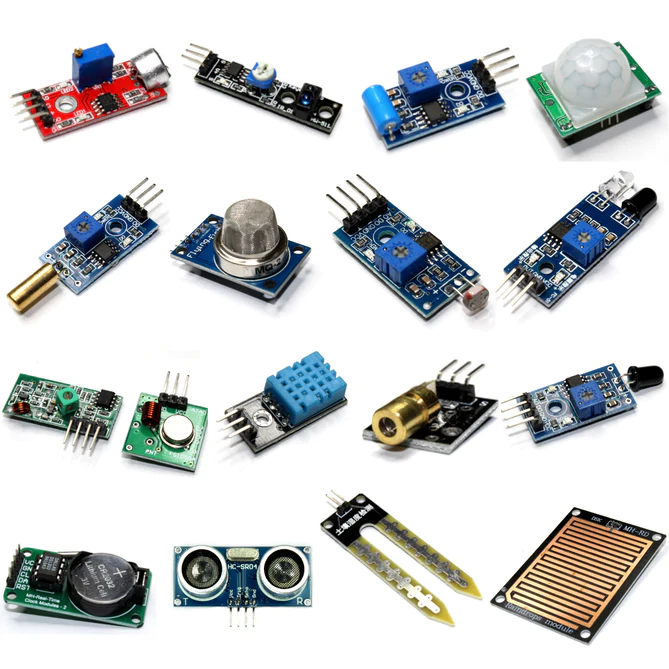
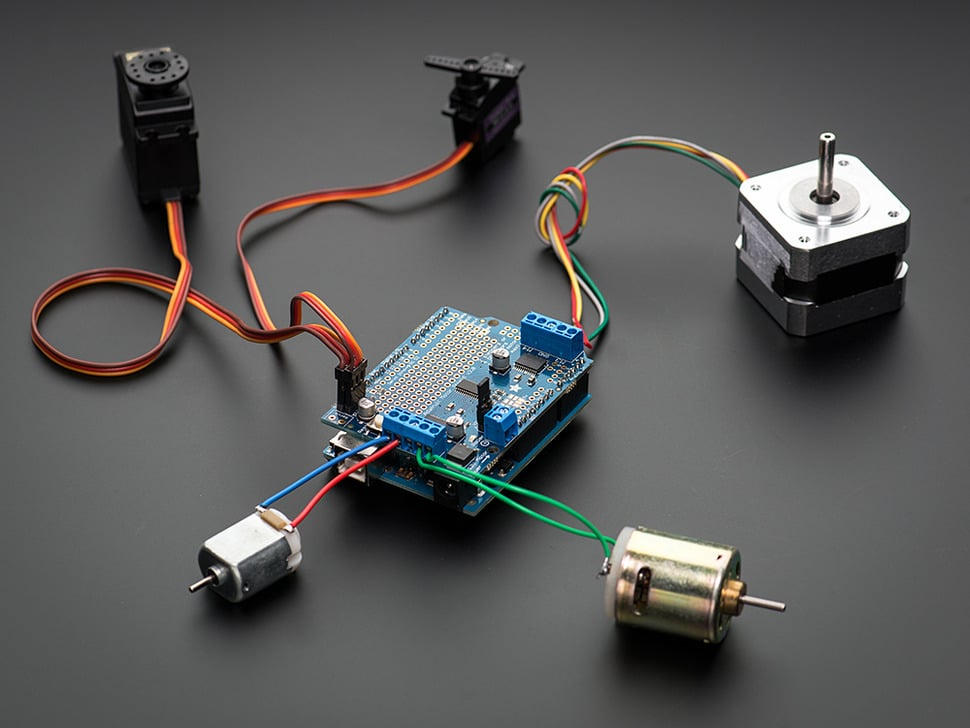
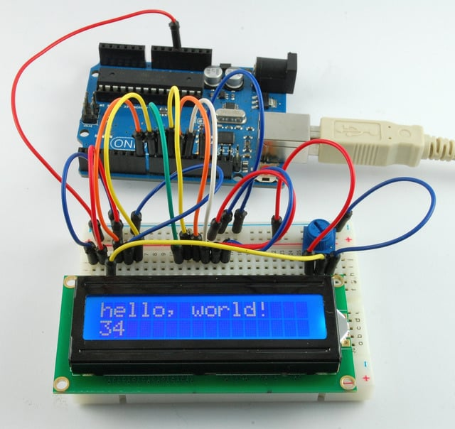

Sensores y Actuadores - Arduino
Sensores
Un sensor es un dispositivo capaz de detectar magnitudes físicas o químicas, llamadas variables de instrumentación, y transformarlas en variables eléctricas. Las variables de instrumentación pueden ser por ejemplo: temperatura, intensidad lumínica, distancia, aceleración, inclinación, desplazamiento, presión, fuerza, torsión, humedad, movimiento, pH, etc. Una magnitud eléctrica puede ser una resistencia eléctrica (como en una RTD), una capacidad eléctrica (como en un sensor de humedad o un sensor capacitivo), una tensión eléctrica (como en un termopar), una corriente eléctrica (como en un fototransistor), etc.
- Los sensores se pueden clasificar en función de los datos de salida en: Digitales, Analógicos, Comunicación por Bus

Actuadores y Periféricos
Un actuador es un dispositivo capaz de transformar energía hidráulica, neumática o eléctrica en la activación de un proceso con la finalidad de generar un efecto sobre elemento externo. Este recibe la orden de un regulador, controlador o en nuestro caso un Arduino y en función a ella genera la orden para activar un elemento final de control como, por ejemplo, una válvula.
Existen varios tipos de actuadores como son: Electrónicos, Hidráulicos, Neumáticos, Eléctricos, Motores, Bombas, entre otros.

Periférico
Es la denominación genérica para designar al aparato o dispositivo auxiliar e independiente conectado a la unidad central de procesamiento o en este caso a Arduino. Se consideran periféricos a las unidades o dispositivos de hardware a través de los cuales Arduino se comunica con el exterior, y también a los sistemas que almacenan o archivan la información, sirviendo de memoria auxiliar de la memoria principal.
Ejemplos de periféricos: Pantallas LCD, Teclados, Memorias externas, Cámaras, Micrófonos, Impresoras, Pantalla táctil, Displays numéricos, Zumbadores, Indicadores luminosos, etc.

Para cada actuador o periférico, necesitamos un “driver” o manejador para poder mandar órdenes desde Arduino, recuerden que los pines de Arduino solo pueden manejar un máximo de 40mA y recomendable usar 20mA de forma continua, tambien recuerden que Arduino solo puede manejar un total de 200 mA de salida. Es decir que la corriente máxima que admite Vcc y GND son 200 mA, Recuerden que los pines Arduino solo pueden tener los valores de 5V (3.3V en algunos modelos) y 0V. No es posible cualquier otro valor de tensión. A la hora de seleccionar un actuador o periférico para usar con arduino habrá que ver sus características y cómo hacer el interface con arduino. En el playground de Arduino existe una gran base de datos de conocimiento para conectar Arduino con casi cualquier HW: http://playground.arduino.cc/Main/InterfacingWithHardware, Tutoriales para conectar Arduino con diversos dispositivos: http://playground.arduino.cc/Learning/Tutorials